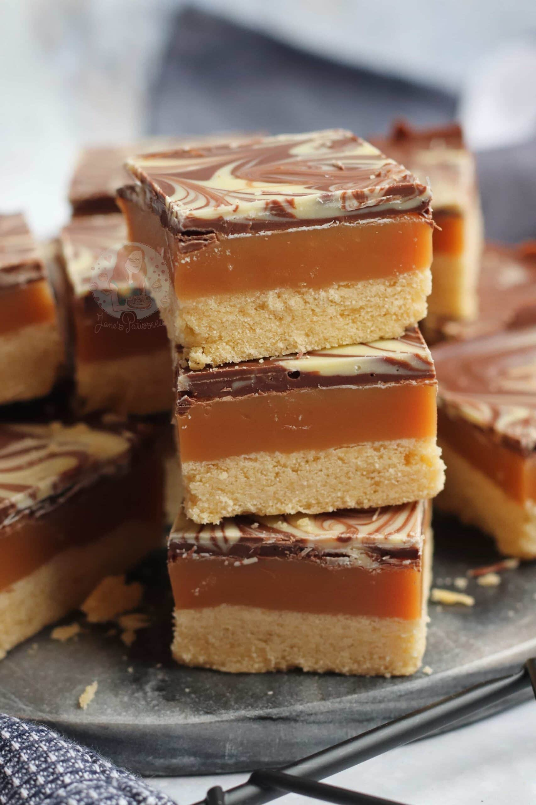

Millionaires Slice

Wow! How delicious!
Today we are going to go through how to create Millionaires-Slice! This delicious caramel treat will be sure to fire up the dopamine engine inside of your brain!
Ingredients:
- Butter
- Chocolate
- Sugar
- Condensed Milk
Steps:
- Cream the butter, sugar, and salt together then add the egg and vanilla.
- Add the flour in batches and stir to combine.
- Pat the shortbread into a lined baking dish and bake.
- Meanwhile, make the caramel by adding butter, condensed milk, and sugar to a saucepan and heat until darkened and thick.
- Pour the caramel over the shortbread layer and chill.
- Make the chocolate ganache by adding the chocolate and cream to a bowl over a double boiler or microwave and melt. Spread over the chilled caramel and shortbread base and sprinkle with sea salt. Chill in the fridge until your millionaire’s shortbread is set.